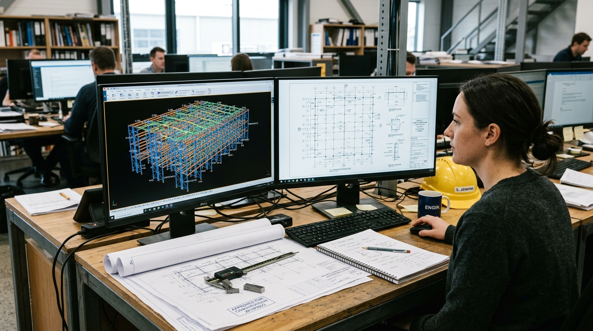

PLATFORM ARCHITECTURE // CONNECTED LAYER
One Unified Context Above Your Stack.
ProRack AI does not replace your existing systems of record. It bridges ERP, CAD/BIM tools, shop routing, and machine sensors into one synchronized operational knowledge graph.
MULTI-SYSTEM TOPOLOGY
Explore Source System Connectors
Click any connected source system below to inspect the extracted entities, semantic interpretation logic, and security boundaries.

ENGINEERING FIDELITY
Tekla 3D Model Coherence
ProRack AI parses 3D Tekla structures models via Open API and IFC geometry streams. Every upright column, pallet beam, and base plate retains its original member mark, structural section, and drawing sheet link.
Revision Diff
Automated DWG Rev C Sync
Fabrication Route
Linked to Cut List #891